Chapter 1
Technology
希望有天能手搓出一整套动力系统！干！
希望有天能手搓出一整套动力系统！干！
2024-12-26 19:51:44
故事的起点，是野火的42JSF0AS-1000😏
2024-12-26 19:59:09
This is a new page.
2024-12-26 19:59:17
2025-01-14 16:30:40
以简单的RL电路为例：
$$U(t)=Ri(t)+L\dfrac{\mathrm{d}i(t)}{\mathrm{d}t}$$拉氏变换后整理可得开环传递函数：
$$G(s)=\dfrac{I(s)}{U(s)}=\dfrac{1}{Ls+R}=\dfrac{\dfrac{1}{R}}{\dfrac{L}{R}+1}=\dfrac{K}{Ts+1}(K=\dfrac{1}{R},T=\dfrac{L}{R})$$一阶惯性环节闭环传递函数标准形式$\dfrac{1}{Ts+1}$，其中，$\omega_c=\dfrac{1}{T}$为一节惯性环节的截止频率，$T$为该环节的时间常数。
截止频率：是指一个系统的输出信号能量开始大幅下降的边界频率（引自维基百科），输出信号幅值降至输入信号最大值的$\dfrac{\sqrt{2}}{2}$，相位滞后45°。
在simulink中建模：
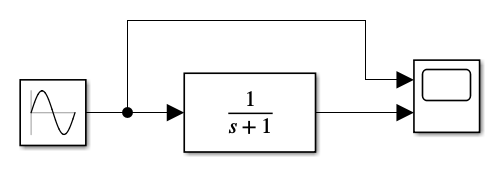
该惯性环节转折频率为$1 rad/s$，测试输入$0.1 rad/s$的正弦波信号：

输出基本能够不失真的跟随输入，计算一下相位差：
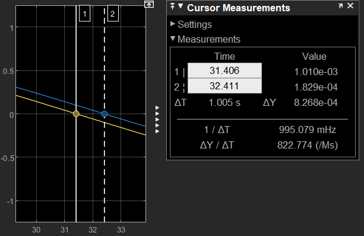
通过Cursor测量时间差$\Delta T \approx 1s$，此时正弦波周期$T = 2\pi / 0.1 = 20\pi$，所以两曲线相位差$\Delta \theta \approx 1 / 20\pi *2\pi \approx 0.1 rad \approx 5.72^{\circ}$。
通过linearizer绘制Bode图如下：
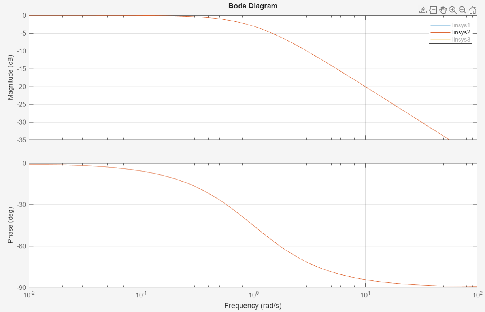
在Bode图中找到$0.1Hz$的相位：
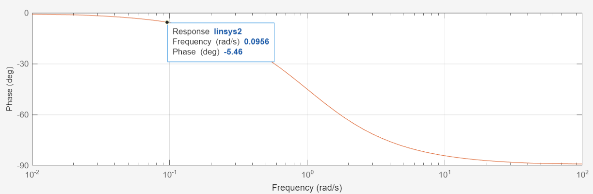
读出值为$-5.46^{\circ}$与计算值$5.72^{\circ}$基本一致（取点读数有误差）。
观测转折频率正弦信号输入：
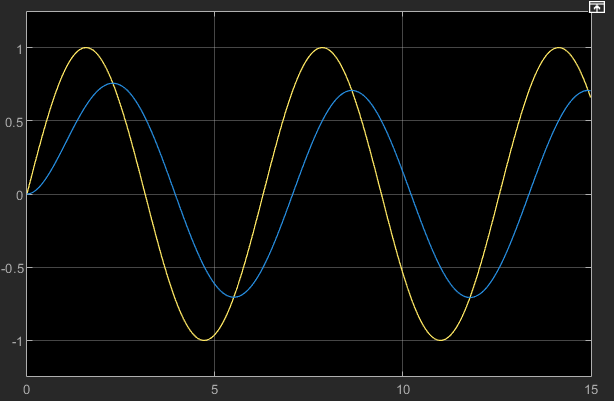
可以看出输入输出波形之间有明显的相位差，通过Cursor读取差值：
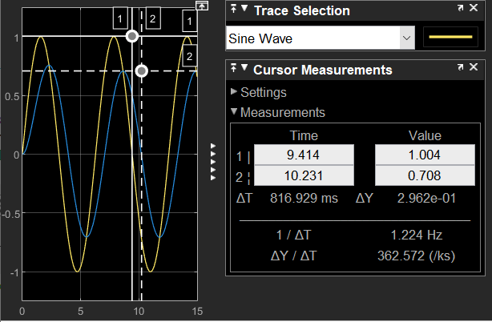
幅值明显降到$0.708 \approx \dfrac{\sqrt{2}}{2}$，同样计算相位差$\Delta = \dfrac{0.817}{2\pi}*2\pi \approx 0.817 rad \approx 46.8^{\circ}$。在Bode图中找到转折频率点：
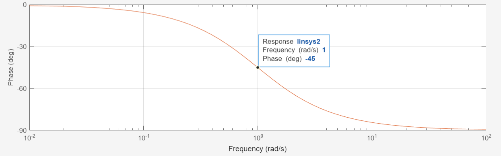
$-45^{\circ}$与计算值$46.8^{\circ}$基本一致。
当输入频率分别为$10Hz$和$100Hz$时，输出信号出现明显失真：
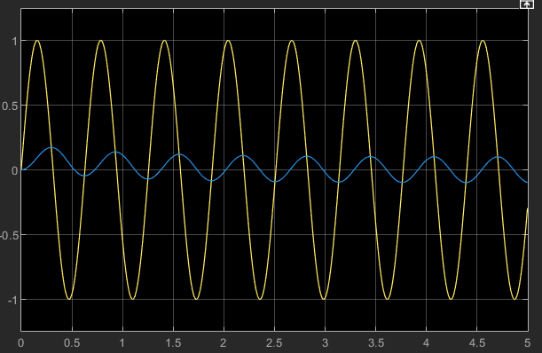
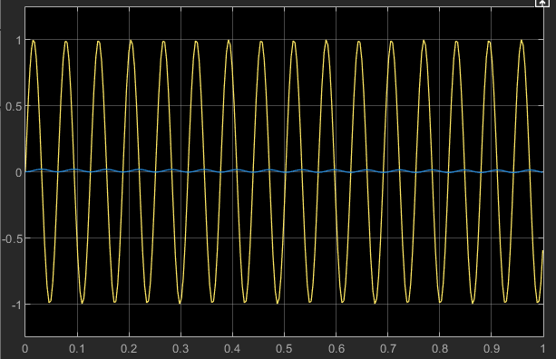
可以看出，当输入频率远高于转折频率时，输出信号完全失真，不再保留有效信号。
绘制转折频率分别为$0.1Hz$、$1Hz$和$10Hz$的一阶惯性环节Bode图：
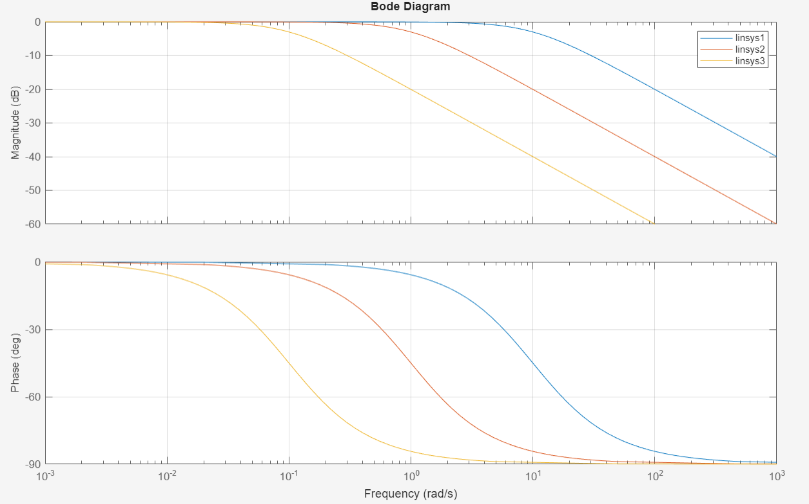
从左到右依次是$0.1Hz$、$1Hz$和$10Hz$。可以明显看出随着时间常数减小，转折频率增大，相频和幅频曲线均右移。
分别绘制开环增益为0.1、1、10、100时$\dfrac{K}{s+1}$的Bode图：
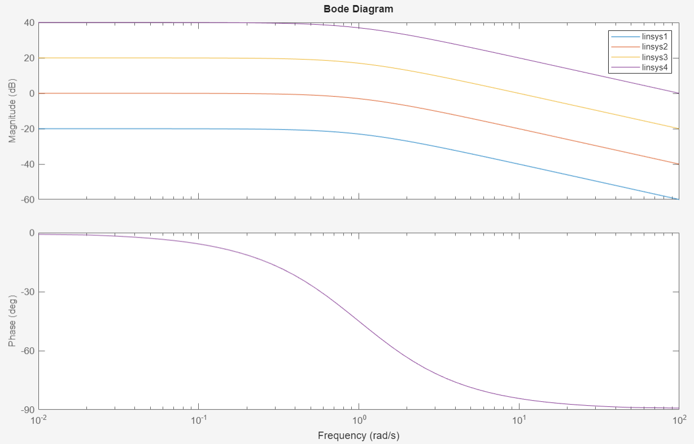
从下到上依次为0.1、1、10、100，可以看出开环增益对相频曲线没有影响，但会使幅频曲线平行上移。这会导致幅频曲线与横轴的交点右移，从而使截止频率$\omega_c$增大
2024-12-26 19:51:44
没错，故事的起点，还是野火😏
2024-12-26 19:59:09
看见的看不见的，反正没法说的bug
2024-12-26 19:59:17
先这么写着，等开始写再说